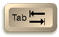
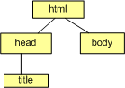
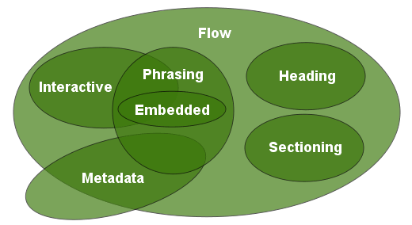
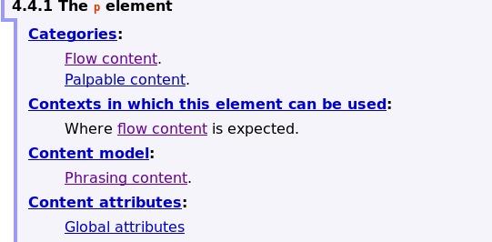
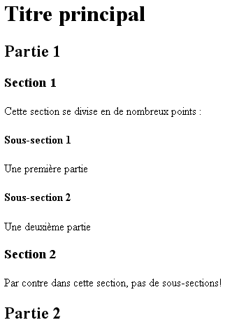
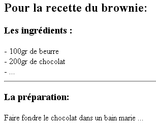

Introduction
Dans cette rubrique, nous précisons quelques points théoriques. Nous parlerons de la nouvelle catégorisation des éléments en HTML5, ensuite nous détaillerons les éléments HTML5 les plus courants.
Dans cette rubrique, nous précisons quelques points théoriques. Nous parlerons de la nouvelle catégorisation des éléments en HTML5, ensuite nous détaillerons les éléments HTML5 les plus courants.
Les balises de structure sont des balises qui permettent de structurer le texte en paragraphe, bloc, titre, ... mais aussi citation ou mise en évidence. Par exemple, <h3> est une balise de structure qui permet de préciser un titre de niveau 3.
Lorsqu'on produit un document (une revue, un livre, un catalogue, ...), on veille toujours à sa structure, càd aux différentes parties qui le composent. On distingue des paragraphes, des citations, des titres, ... Imaginez-vous lire un texte sans aucune structure (ni chapitre, ni paragraphe), vous abandonneriez rapidement la lecture, noyé dans le flux monotone du texte. Ou encore, imaginez un syllabus ne contenant que du texte en continu sans aucun titre ou section!
Structurer le contenu permet de mettre en évidence les concepts abordés et de faciliter la tâche du lecteur.
Pour rappel, un élément en HTML est constitué d'une balise ouvrante + un contenu + une balise fermante.
Il existe des éléments en HTML qui ne possèdent pas de balise fermante; il s'agit des éléments vides. On parle d'élément vide parce que celui-ci n'a aucun contenu lié. Il s'agit d'abréviation autorisée par le HTML permettant de diminuer la quantité de balisage.
br (de l'anglais break) est un exemple d'élément vide: il permet de faire un passage à la ligne suivante. Cet élément sera détaillé plus tard.
Les éléments HTML peuvent spécifier un attribut id et (ou) class. Ces attributs sont quasiment identiques; ils permettent notamment la mise en forme via les CSS.
L'attribut class peut-être mis sur n'importe quelle balise et permettra à plusieurs éléments au sein d'une page d'appartenir à la même classe. Avec les css, ces éléments auront le même rendu.
La valeur de l'attribut id par contre doit être unique dans une page html. Cela permet de référencer un élément précis dans une page.
Un saut de ligne correspond à un passage à la ligne suivante qui intervient lorsqu'on appuie sur la touche "enter" du clavier. Un navigateur n'affiche pas les sauts de lignes des fichiers HTML ni les lignes vides ou tabulation; il prend le texte qui se trouve dans le corps du document et l'affiche à l'écran sans en tenir compte. Il remplit tout l'espace de la fenêtre en s'alignant le plus à gauche et le plus à droite possible, puis passe à la ligne suivante. Redimensionnez la fenêtre du navigateur et constatez que le texte se replace de manière à remplir l'espace disponible, cela prouve bien toute la souplesse du HTML. Il convient donc d'introduire grâce aux éléments du langage HTML les espaces, sauts de ligne ou tabulations en utilisant des éléments de type bloc.
En HTML, on peut insérer des éléments les uns dans les autres, on parle d'imbrication. Dans le chapitre précédent (HTML), nous avons abordé la structure de base d'une page HTML. Dessiner le système d'imbrication des éléments d'une page Web revient à dessiner un arbre généalogique, comme montré dans le schéma ci-contre. Au sommet se trouvent les arrières grands-parents puis en-dessous leurs enfants et petits-enfants, etc
Dans le schéma ci-contre, on comprend que l'élément html se trouve toujours à la racine de l'arbre et possède deux éléments imbriqués, ses deux enfants : head et body. L'élément title est imbriqué dans l'élément head.
Il faut toujours veiller à ce que les balises ne soient pas dépareillées càd que les imbrications ne se chevauchent pas. Effectivement, si votre page HTML possède des balises dépareillées, les navigateurs Web afficheront des choses erronées!
Voici un mauvais exemple :<p><em>HTML</p> est le cours le plus cool.</em> . Effectivement, il faut d'abord fermer l'élément em avant de placer la balise </p>
Avant HTML5, on distinguait 2 types de balises de structure : le type en-ligne ou le type bloc. Les balises "bloc" pouvaient contenir des balises "bloc" et des balises "en-ligne" tandis que les balises "en-ligne" ne pouvaient contenir QUE d'autres balises "en-ligne". On ne pouvait pas par exemple mettre un paragraphe (type block) dans un lien (type en-ligne). Ces limitations, HTML5 a voulu les balayer. C'est pourquoi une nouvelle manière de catégoriser les éléments est apparue.
Il est à noter que l'on parle toujours de balises en ligne et en bloc en HTML5. On parle alors du rendu et non pas de catégorie. En effet, les balises en ligne s'afficheront les unes à côté des autres (sur une ligne) tandis que les balise en bloc s'afficheront les une en dessous des autres. Chaque balise HTML a un rendu par défaut (en ligne ou en bloc) mais nous verrons que nous pouvons facilement changer ce comportement grâce aux CSS.
Voici la nouvelle catégorisation des éléments en HTML5 : 
Vous devez simplement retenir qu'un élément HTML fait partie d'une ou plusieurs de ces catégories. L'objectif de ces catégories est de rassembler les balises ayant des caractéristiques similaires notamment les balises enfants qu'elles peuvent contenir. Un exemple : la balise p représentant un paragraphe fait partie de la catégorie FlowContent mais aussi de PhrasingContent et ne pourra contenir que des éléments faisant partie de la catégorie PhrasingContent. De manière générale, les balises faisant partie du PhrasingContent ne pourront contenir que des balises PhrasingContent. Cependant des exceptions existent et il serait fastidieux de tout énoncer ici. Je vais donc vous détailler dans le pragraphe suivant la technique à employer pour s'assurer d'imbriquer correctement les bons éléments HTML.
Premièrement, sachez que le validateur HTML vous indiquera si vous
avez des erreurs d'imbrications.
Deuxièmement, grâce à ce lien
pointant vers la norme HTML5 du site du W3C, vous pourrez voir les
différentes catégories. En cliquant sur une catégorie, vous verrez
les différents éléments qui la compose et surtout en cliquant sur un
élément vous verrez le content model autrement dit les
éléments ou la catégorie d'élément que l'élément HTML choisi peut
contenir. Essayez avec l'exemple de la balise p.
Vous devriez obtenir ceci :

En HTML, la plupart des balises ont une sémantique qui leur est associée. Un élément sémantique est un élément auquel on attache une signification. Par exemple l'élément <header> contiendra l'en-tête (bannière, logo, menu) d'une page HTML. Il y a plusieurs avantages à utiliser ces balises sémantiques notamment le fait qu'elles rendent le code plus clair. En HTML5, de nouveaux éléments sémantiques ont donc été introduits. Ils sont décrits ci-dessous. On comprend beaucoup plus facilement ce que l'on va trouver dans une balise <header> plutôt que <div>. Elles permettent également aux robots des moteurs de recherche d'utiliser cette sémantique pour traiter plus efficacement l'indexation d'un site web.
 Utilisez donc toujours un élément sémantique plutôt qu'un élément générique quand
cela est approprié !
Utilisez donc toujours un élément sémantique plutôt qu'un élément générique quand
cela est approprié !
L'élément <header> constitue l'en-tête(bannière, logo, menu) de la page HTML. Il est souvent commun à toutes les pages d'un site Web.
L'élément <footer> constitue le pied de page de la page HTML. Il peut être constitué de coordonnées, d'un copyright, ... . Il est souvent commun à toutes les pages d'un site Web.
L'élément <nav> contient la liste des liens utiles à la navigation vers les différentes pages du site Web. C'est dans cette balise qu'il faut inclure le(s) menu(s). Il peut être placé dans le <header> ou directement dans l'élément <body>. Plusieurs balises <nav> peuvent être présentes sur un site si vous avez par exemple un menu et un sous-menu.
Pour diviser un document en sections bien déterminées, on utilise la balise <section> ou la balise <article>. Ces 2 divisions de texte représentent une portion de texte indépendante (qui peut contenir des titres, des paragraphes, ...) comme un article de journal par exemple. On discute beaucoup au sujet de l'imbrication de ces 2 balises l'une dans l'autre. Retenez tout simplement que l'imbrication est possible dans les 2 sens.
La balise <p> indique le début d'un paragraphe et </p> termine le paragraphe. Lorsque le navigateur rencontre un nouveau paragraphe (càd <p>), il insère une ligne vide ainsi qu'un peu d'espace vertical avant de débuter un nouveau paragraphe.
L'exemple suivant illustre ces propos:
| Le code de la page HTML : | L'affichage par le navigateur : |
|---|---|
|
Lili,take another walk out of your fake world please put all the drugs out of your hand you'll see that you can breath without not back up some much stuff you got to understand for every step in any walk any town of any thought i'll be your guide for every street of any scene any place you've never been i'll be your guide Lili,take another walk out of your fake world please put all the drugs out of your hand you'll see that you can breath without not back up some much stuff you got to understand for every step in any walk any town of any thought i'll be your guide for every street of any scene any place you've never been i'll be your guide |
Un paragraphe peut contenir n'importe quel élément permis dans un flux de texte (càd élément de type en-ligne) comme par exemple img. Quand un élément de type bloc intervient dans un paragraphe, le navigateur considère le paragraphe comme terminé (càd comme si il ajoutait la balise </p>).
On peut spécifier un certain nombre d'attributs dans la balise <p>. Néanmoins, ces attributs prendront tout leur sens que lorsqu'on introduira les CSS. Enumérons quand même quelques-uns d'entre eux
Il est également possible de structurer le document au moyen d'éléments de type titre. Effectivement, des balises <h1> ... <h6> (head en anglais) permettent de définir des titres. Les titres séparent les passages de texte et véhiculent aussi visuellement une signification. Il existe 6 niveaux: l'élément h1 représente le titre de plus haut niveau, <h2> représente le niveau juste inférieur, etc . Le texte qui se trouve, par exemple, à l'intérieur des balises (par exemple : <h1> le titre premier </h1>) constitue le vrai contenu du titre de niveau 1 (" le titre premier " dans l'exemple). Par défaut, càd sans feuille de style précisée, le navigateur affiche leur contenu de la plus grande à la plus petite taille de caractères, en gras la plupart du temps. Le texte de l'élément h4 est de la même taille de caractères que le texte normal (du reste du document).
Les balises de titre cassent le flux de texte, le titre est isolé sur une ligne, séparé du reste du texte. Il s'agit bien d'un élément de type bloc.
Un titre peut contenir n'importe quel élément autorisé dans un texte (càd élément de type en-ligne) comme par exemple img ou encore a.
On peut garnir les éléments de type titre d'un certain nombre d'attributs (id, class et title) ayant la même signification que pour <p> et <div>
Voici un exemple d'utilisation des balises de titre:
| Le code de la page HTML : | L'affichage par le navigateur : |
|---|---|
|
 |
Le bloc de citation est un passage de texte extrait d'un autre document. La balise <blockquote> permet de définir le début de l'extrait et </blockquote>, la fin. Les navigateurs affichent généralement le bloc de citation dans un paragraphe isolé avec une indentation particulière (en italique, entre guillemets ou avec indentation). Il existe un élément similaire de type en-ligne pour les citations plus courtes: <q> (détaillé ci-après).
On peut garnir l'élément blockquote avec des attributs id, class et title mais aussi de l'attribut :
Voici un exemple de citation :
| Le code de la page HTML | L'affichage par le navigateur |
|---|---|
|
Citer les mots de quelqu'un, c'est mettre sous verre une collection de beaux papillons qui ont perdu leur lumière et leur éclat. |
On peut intégrer des éléments de type bloc dans un élément blockquote.
Parfois il est nécessaire d'imposer au navigateur d'afficher un texte tel quel avec des indentations, des alignements, etc. <pre> permet l'affichage d'un texte exactement comme il a été tapé dans l'éditeur y compris les retours à la ligne, les espaces et les lignes vides. On utilise souvent la balise de mise en forme <pre> quand l'intégrité des colonnes et des rangées de caractères doit être conservée. L'usage le plus fréquent est l'affichage de code informatique comme le montre l'exemple qui suit.
| Le code de la page HTML : | L'affichage par le navigateur : |
|---|---|
|
public class SommeImpl {
public int calculateSomme(int n1, int n2){
return n1+n2;
}
}
|
Les balises qui produisent une coupure dans le flux du texte (les titres, <p> ou encore <div>) ne doivent pas être utilisées dans l'élément pre.
On peut garnir l'élément pre des attributs id, class et title ayant la même signification que pour <p> et <div>
Il est également possible d'insérer des lignes horizontales pour délimiter et séparer certaines sections d'un document. <hr> permet effectivement d'insérer une ligne sur toute la largeur de la fenêtre afin de casser le flux de texte. hr est un élément vide, càd qui ne possède pas de contenu.
Voici un exemple :
| Le code de la page HTML : | L'affichage par le navigateur : |
|---|---|
|
 |
Pour créer une liste en HTML, on a besoin de deux éléments. Le premier élément permet de baliser chaque item de la liste. Le second détermine le genre de liste qu'on établit.
L'élément qui délimite les items de la liste est li (list item). Pour définir le genre de liste, on utilise deux balises : <ol> (ordered list), <ul> (unordered list) et <dl> (definition list).
Les listes sont des éléments de type bloc précédées d'un marqueur : une puce, pour les listes non-ordonnées, et un numéro, pour les listes ordonnées.Une liste ordonnée (ol ) est une liste dans laquelle chaque item est numéroté tandis que dans une liste non-ordonnée (ul), les items sont énumérés (avec des puces, boules, ...).
Une liste de définitions permet de mettre en évidence un mot pour chaque item de la liste. Pour intégrer une liste de définition dans une page HTML, on n'utilise pas la balise <li> comme pour les autres listes mais les éléments: dl, dt (definition title) et dd (definition description).
Voici quelques exemples:
| Le code de la page HTML : | L'affichage par le navigateur : |
|---|---|
|
|
|
|
|
|
Avec les feuilles de style, vous verrez qu'il est possible de modifier le type des puces , le type de numérotation ou encore modifier l'image de la puce dans une liste. (Voir le chapitre sur les CSS)
La balise <br> ou <br/> (selon le standard employé) effectue un retour à la ligne du texte. <br> vient de l'anglais break, coupure de ligne en français.
L'élément br ne possède pas de balise fermante en HTML 5 contrairement aux autres éléments HTML; il s'agit d'un élément vide. Effectivement, <br> permet d'effectuer un saut de ligne; il n'a pas été conçu pour avoir de contenu. En toute logique, on aurait eu un élément composé des balises <br> et </br> mais, n'ayant aucun contenu à indiquer, cela s'avérait inutile.
On peut améliorer la présentation de l'exemple présenté plus haut
| Le code de la page HTML : | L'affichage par le navigateur : |
|---|---|
|
Lili,take another walk out of your fake world please put all the drugs out of your hand you'll see that you can breath without not back up some much stuff you got to understand |
|
Lili,take another walk out of your fake world |
On peut garnir l'élément br des attributs id, class et title ayant la même signification que pour p et div
Attention
cependant, si vous avez plusieurs balises <br> les unes à la
suite des autres, vous avez soit un problème de structuration HTML
ou vos règles CSS doivent être modifiées.
L'élément q est utilisé pour des citations courtes. Il est similaire à l'élément bloc blockquote car il permet également de baliser des citations mais plus courtes. Une citation en-ligne est entourée de texte normal et s'affiche entre-guillemets dans le suivi normal du flux de texte.
<q> dispose également des attributs cite , id et class.
Voici un exemple :
| Le code de la page HTML | L'affichage par le navigateur |
|---|---|
|
Comme on dit : |
La balise <em> permet de dire au navigateur qu'il doit mettre l'emphase sur le texte. La plupart du temps, il s'agit d'afficher le texte en italique mais on peut décider de marquer autrement l'emphase via une feuille de style. Dans ce syllabus, l'emphase est marquée par un agrandissement du texte et un changement de couleur (orange).
Voici un exemple :
| Le code de la page HTML | L'affichage par le navigateur |
|---|---|
|
Il faut placer un bon nombre d'emphases dans un texte; ni trop ni trop peu. |
En HTML4, les éléments sémantiques <section> et <article> n'existaient pas, les sections d'une page HTML était alors divisées grâce à l'élément générique div. Cet élément en HTML5 a perdu de son utilité, cependant il peut encore être employé pour réaliser des divisions où on ne trouve pas un élément sémantique approprié.
On peut l'utiliser pour structurer le texte mais on ne perçoit son intérêt que lorsqu'on y ajoute des attributs d'identification (id, class et title) pour la mise en forme du document. En d'autres termes, il faut attendre d'avoir abordé les feuilles de style (CSS) pour comprendre les attributs de <div> énoncés ci-après.
L'élément span délimite simplement une partie de contenu. On peut préciser les attributs id ou class d'un élément em.
La balise <span> est utile lorsqu'on décide d'appliquer un style sur une partie de texte (voir les feuilles de styles, CSS) ou de déterminer une ancre (voir les liens hypertextes).